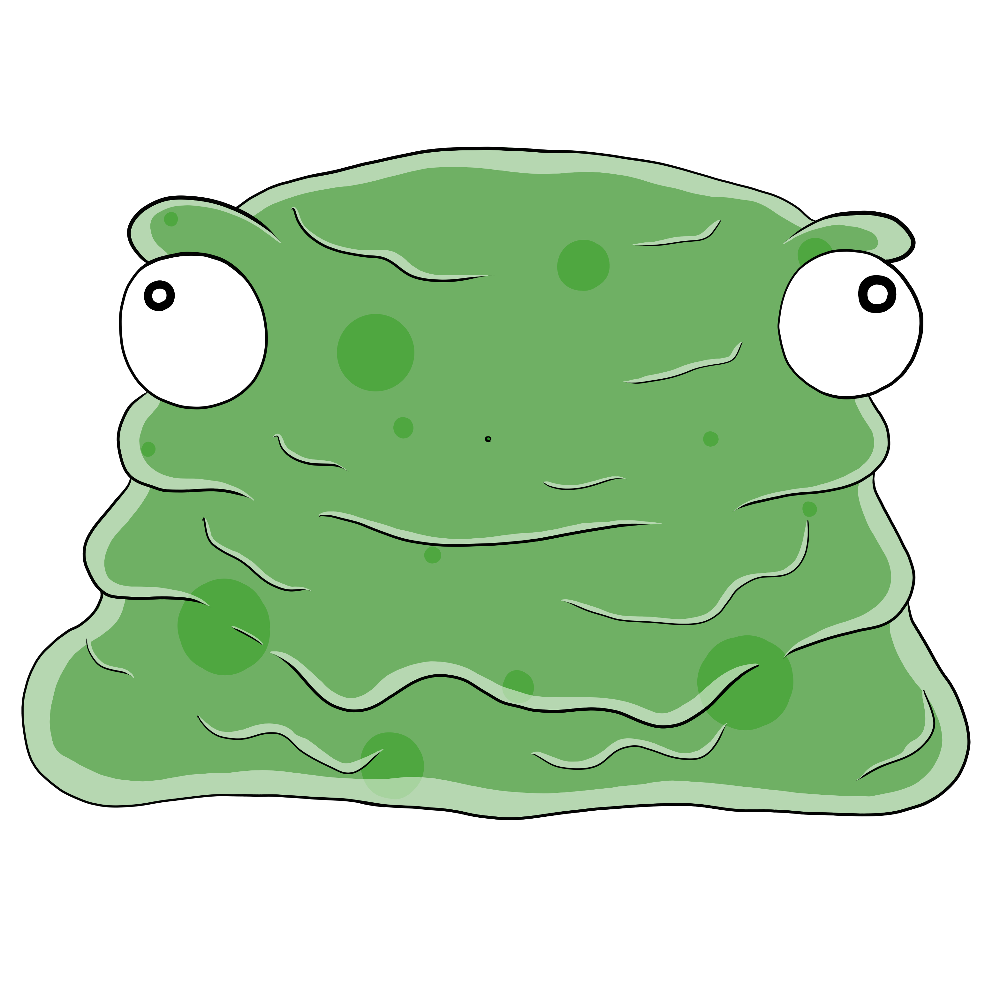
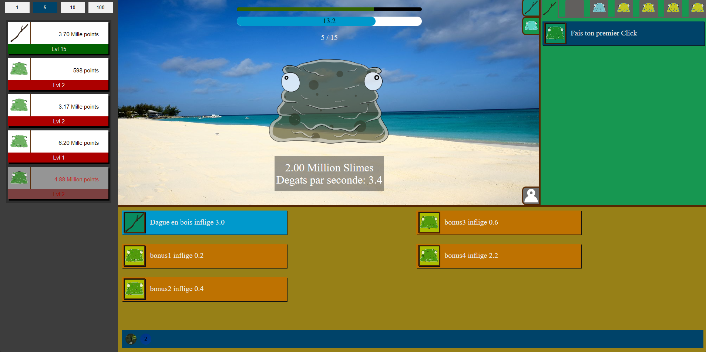

Je m'appelle Mathias Erades, j'ai 22 ans et je suis un développeur web.
Après avoir fait un Bac STI2D (Sciences et Technologies de l'Industrie et du Développement Durable), j'ai
fait un BTS SNIR (Système Numérique option Informatique et Réseau) où j'ai fait un stage à l'entreprise
ADGravure. Durant ce stage, mon objectif était de créer le site de l'entreprise. J'ai énormément apprécié ce
qui m'a donné l'envie de partir en programmation web. Désormais, je suis la formation de la 3W Academy et je
cherche une alternance afin de pouvoir apprendre encore davantage en codage web.
Avec un ami, nous avons eu l'idée de créer une entreprise dont le projet serait de réaliser des sites web
pour des clients. Nous comptions donc créer un site maquette pour, dans un premier temps, nous faire
connaître, puis montrer aux personnes intéressées ce dont nous sommes capables. Pendant que je me suis
occupé du code, lui s'est chargé du design.
Nous avons donc commencé par la page d'accueil, qui servira de présentation pour notre site, mais surtout
pour notre entreprise. Étant la première page que nous avons faite, c'est ici que nous avons choisi à quoi
ressemblerait l'ensemble du site. Nous avons donc opté pour un fond gris foncé avec des touches de jaune.



Pendant la création de notre premier site, je me suis rendu compte qu'il me manquait beaucoup de
connaissances en développement web. J'ai donc suivi la formation gratuite sur le site OpenClassroom, où j'ai
beaucoup appris. Cela m'a donné l'idée de créer un 'clicker' en HTML/CSS et JavaScript.
Le concept est simple: il y a un bouton sur lequel on clique, qui nous donne des points. Ensuite, on utilise ces points pour acheter des améliorations afin de gagner encore plus de points. Il existe deux grands types d'améliorations: les améliorations passives, qui génèrent des points automatiquement, et celles qui améliorent nos clics.
Lorsque j'ai montré le jeu à mon ami, il a beaucoup aimé le concept. sachant que notre première idée allait être compliquée à réaliser, entre les entreprises plus connues qui feraient le travail plus rapidement et les sites permettant à n'importe qui de créer leur propre site. Nous avons donc décidé de nous concentrer sur le clicker.
Le bouton est devenu une image de blob avec une animation de dégâts, qui possède une barre de vie à faire descendre avant de récupérer nos récompenses. Les bonus infligent désormais des dégâts à l'ennemi. Il y a plusieurs niveaux avec des boss à vaincre dans un temps imparti, un système de succès qui permet de gagner divers bonus, ainsi qu'un système de création de compte avec une sauvegarde des données pour pouvoir reprendre sa progression depuis n'importe où.
Nous avions encore plusieurs idées, comme avoir son propre personnage avec un équipement que l'on améliore, mais par manque de temps, nous avons dû arrêter le projet. Cependant, ce clicker m'a énormément appris et j'espère pouvoir en apprendre encore plus en développement web.
Le concept est simple: il y a un bouton sur lequel on clique, qui nous donne des points. Ensuite, on utilise ces points pour acheter des améliorations afin de gagner encore plus de points. Il existe deux grands types d'améliorations: les améliorations passives, qui génèrent des points automatiquement, et celles qui améliorent nos clics.
Lorsque j'ai montré le jeu à mon ami, il a beaucoup aimé le concept. sachant que notre première idée allait être compliquée à réaliser, entre les entreprises plus connues qui feraient le travail plus rapidement et les sites permettant à n'importe qui de créer leur propre site. Nous avons donc décidé de nous concentrer sur le clicker.
Le bouton est devenu une image de blob avec une animation de dégâts, qui possède une barre de vie à faire descendre avant de récupérer nos récompenses. Les bonus infligent désormais des dégâts à l'ennemi. Il y a plusieurs niveaux avec des boss à vaincre dans un temps imparti, un système de succès qui permet de gagner divers bonus, ainsi qu'un système de création de compte avec une sauvegarde des données pour pouvoir reprendre sa progression depuis n'importe où.
Nous avions encore plusieurs idées, comme avoir son propre personnage avec un équipement que l'on améliore, mais par manque de temps, nous avons dû arrêter le projet. Cependant, ce clicker m'a énormément appris et j'espère pouvoir en apprendre encore plus en développement web.
